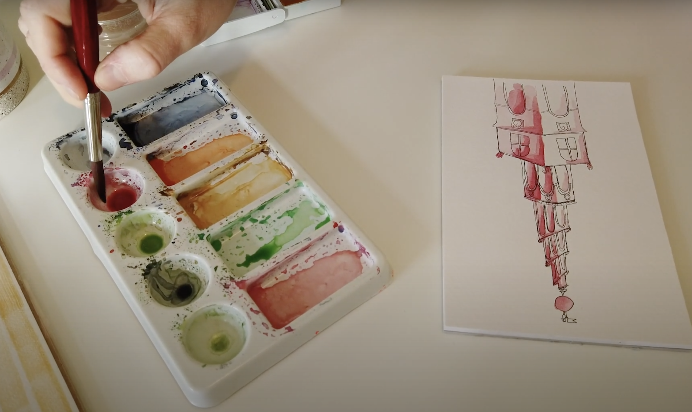

Grundlæggende indhold
I tema 5, grundlæggende indhold, blev jeg introduceret til filmproduktion. Jeg fik en grundlæggende viden og blev introduceret til videoproduktion. Jeg fik bl.a. viden om forarbejdet inden optagelsen, selve optagelsen, samt postproduktion. Jeg lærte faglige begreber indenfor video- og fotoproduktion. Udover dette, skulle jeg nu benytte de færdigheder jeg havde lært i de foregående temaer, til at redesigne en selvfunden virksomheds hjemmeside.
Vi startede med at lave en pilotvideo af en person med en passion, for at afprøve forarbejdet inden en optagelse, selve optagelsen, samt postproduktion, herunder klipning i Adobe Premiere Pro. Her skulle vi i vores tildelte grupper lave forarbejde og filme, men vi skulle hver især klippe videoen sammen.

Derefter skulle vi i gruppen finde en hjemmeside som vi kunne redesigne. Vi valgte hjemmesiden Sisterbrandt. Da vi havde valgt hjemmesiden fik vi fire af vores medstuderende til at lave en 5-sek test på den. Vi lavede også en BERT-test som vi fik vores medstuderende og andre til at svare på.
Til at redesigne hjemmesiden, blev vi i gruppen enige om hvilken visuel oplevelse vi ville skabe for brugeren, via designstil, farvevalg og fonte. Hertil lavede vi bl.a et styletile både for den gamle side, og for den nye side. Da vi havde snakket om fotostil, lavet storyboards, interviewguide og synopsis, skulle vi ud og filme og tage billeder hos Sabine Brandt, indehaver af Sisterbrandt.
Vi gik sammen i gang med forarbejdet til den nye hjemmeside, herunder wireframe, prototype, sitemap og layoutdiagram. Vi lavede også en funktionalitetsliste og indholdsoversigt over den gamle side. Vi gik i gang med at kode header og footer sammen, og derefter en side hver. Her fik vi brug for at bruge JavaScript til at lave en burgermenu, som vi havde lært tidligere, nemlig i tema 4.
Da vi havde kodet hjemmesiden færdig, lavede vi en lighthousetest som performede med 99%. Den kom med et forslag om, at vi skulle gøre siden tilgængelig i søgemaskiner, men da siden ikke er godkendt med klienten, kan vi ikke det.
Vi er meget tilfredse med vores performance på 99%.